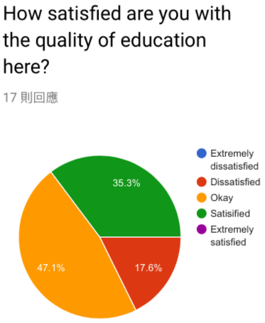
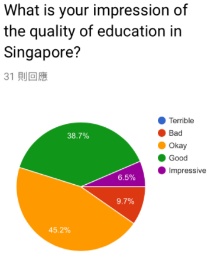

Introduction
The purpose of doing this research is to find out the difference in education between Hong Kong and Singapore. Or rather, to find out whether Hong Kong or Singapore has a better quality of education. We chose education because it relates to us the most and is what makes us who we are in future life, and based on the education we go through, it affects what kinds of things we do to help the society that helped us grow. We will conduct this research by searching online for background information of Hong Kong education and Singapore education, then conducting surveys in both Singapore and Hong Kong, asking locals how they feel about their city’s education.
Definition of Quality of Life
Quality of Life (QoL) is the general well-being of individuals and societies, outlining negative and positive features of life. It observes life satisfaction, including everything from physical health, family, education, employment, wealth, religious beliefs, finance and the environment. QoL has a wide range of contexts, including the fields of international development, healthcare, politics and employment.
Background Information
Singapore
Singapore has been at or near the top of international leagues tables that measure children’s ability in reading, maths and science. Singapore also has the highest achieving students in international education rankings. Primary education, normally starting at age seven, is a four-year foundation stage (Primary 1 to 4) and a two-year orientation stage (Primary 5 to 6). Primary education is compulsory under the Compulsory Education Act since 2003. Exemptions are made for pupils who are homeschooling, attending a full-time religious institution or those with special needs who are unable to attend mainstream schools. Based on results of the PSLE, students are placed in different secondary education tracks or streams: "Express", "Normal (Academic)", or "Normal (Technical)". Singaporeans are forbidden to attend international schools on the island without Ministry of Education permission.
Hong Kong
Hong Kong offers a high quality academic and social experience and has high overall rankings. Every child in Hong Kong, without any reasonable excuse, is required by law to attend a primary school after the child has attained the age of 6. It is also required to attend a secondary school after primary education and is completed before they attains the age of 19. However, a child who has completed Form 3 of secondary education and whose parent can produce evidence to the satisfaction of the Permanent Secretary for Education, shall not apply.
Indicators of QoL in Education
- Employability of graduates - i.e. how easy it is for a university graduate to find a job
- Quality of students - how well the students do in academics and personal accomplishment
- Satisfaction of students - how happy students are with their education
Or to put the indicators as questions: Are the students satisfied with the education they receive? Is getting a job easy for a university graduate? What basic essences or qualities of students are nurtured?
EBL Questions
- Level One
-
- What is the length of a school day?
- What are the differences between their studies and ours?
- What is the amount of pressure they have?
- Level Two
-
- Why do we need education?
- Why are Hong Kong and Singapore's education systems different?
- Level Three
-
- What if Hong Kong and Singapore switched education systems?
- Singaporean students are more satisfied than Hong Kong students, due to less pressure
- Singaporean university graduates have a higher employability than Hong Kong students
- Singaporean students have higher grades and better personal accomplishments than Hong Kong students
Hypothesis
Singapore has a better quality of education than Hong Kong, because:
Data collection method
Our target audience would be students in Hong Kong and Singapore, we would use questionnaire to collect data. We would use questions such as "Are you satisfied with the education your school brings you?". We would be taking 25 copies for Singapore and 25 copies for Hong Kong.
For Singapore we would be researching in the school, Zhong Hua secondary school, that we visited in the trip. For Hong Kong we would go to places that has lots of students shopping such as Causeway Bay.
At the same time we would observe more information while we were visiting their school, through communication and having lessons with them, while taking important notes at the same time. We would be able to know more about the quality of the students, (e.g if they swear a lot or if they are really polite to others).
Our emergency plan is to research for different news and analysis about information that we didn’t get from the trip. We have now used news talking about ranking of schools and education level in Singapore and Hong Kong.
Survey Results
Singapore
|  |  | |
Hong Kong
|  |
Comparison
After conducting the research in both Singapore and in Hong Kong, we found out the both Hong Kong and Singapore people are mostly satisfied with their education system but there is still a lot of pressure. In Singapore, student have tests almost every week so Singaporeans hope that there can be less exams and tests. In Hong Kong, people think having less homework and giving more support to students can improve the quality of education. Hong Kongers have a great impression on Singapore education while most Singapore thinks education in Hong Kong is ok. Although there are some improvement that can be made, most people in both Hong Kong and Singapore think their education is better than the other.